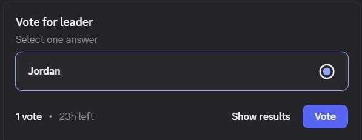
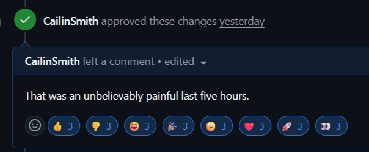
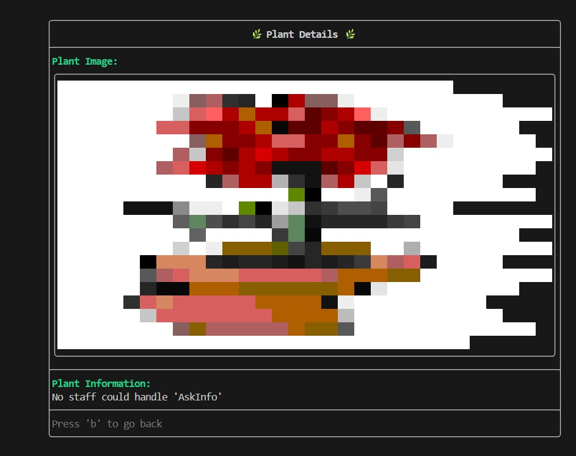
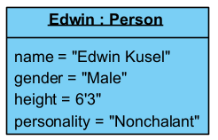
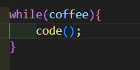

|
Classists
|
GreensOnly is a C++ design pattern orientated system designed and built to simulate the different roles and activies in a nursery. You are able to participate as a customer, staff memebr or manager in our interactive system.
Before you begin, ensure you have the following installed:
The system provides two interactive interfaces:
make install-deps first)Building:
make - Build CLI only (default, no FTXUI needed)make all - Build everything: CLI and GUImake gui - Build GUI only (without running)Testing:
make test - Run unit testsmake itests - Run integration testsCleanup:
make clean - Remove build filesmake clean-all - Remove build files and dependenciesHelp:
make help - Show all available commands with detailed information| Profile | Name | Student number | Role |
|---|---|---|---|
 | Jordan Naidoo | u24664155 | Group Dictator |
 | Cailin Smith | u24570525 | CLM (Command line master) |
 | Alex Lange | u24587312 | Mr. Worldwide |
 | Edwin Kusel | u24670058 | SDA (Senior Diagram Architect) |
 | Abhay Rooplall | u24568792 | The Commander |